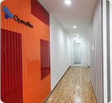
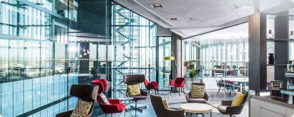

個室のレンタルオフィスならOpenoffice
東京・大阪をはじめ全国に20拠点以上
オープンオフィスとは
オープンオフィス｜レンタルオフィス
成功の秘訣
オープンオフィスの創業理念は、起業家の方の成功の手助けをすることです。
ビジネスに最適な立地に創業資金を最低限に抑えることで リスクを低減できるオフィスを提供することにあります。
なぜ無人運営なのか？
お客様の独立性と、低価格を実現するための運用システムを最優先しました。この結果お客様は遠慮することなく24時間業務に専念できます。オープンオフィスは創業時・起業家の皆様のオフィスに求めるニーズを徹底追及した運用を実現しました。

何も買う必要がない！
お部屋そのものの立地や、広さ、そして料金以外に大切なことがあります。 オフィスを構えるには、お部屋そのもの以外にも、本当にいろいろなものが必要です。
机はどうしよう？コピー機は？プリンタは？インターネットは？
オープンオフィスはそれらがそろっています。
今すぐにでも仕事にスタートダッシュがかけられます。
オープンオフィス ご利用の方々
こんな方々がご利用しています
保証金や内装費用など極力コストを抑えたい。外回りが多く、ノマドワーキングスタイルのオフィスとして。少人数の地方拠点オフィスとして。オフィスを増やしたかったが、最小限のコストでの増設を望んでいた。等々、オープンオフィスをご利用いただいた理由や活用の事例をご紹介します。
オープンオフィスを探す
首都圏


東海・近畿


北信越


リージャスグループが提供するオフィスについて
起業・創業から発展へ

起業家の方たちのニーズについて、特にコスト面から徹底追及して作られたのがオープンオフィス のブランドです。
リージャスグループは、起業の発展、成長に合わせたオフィススペースを提供するために 起業・独立、支店開設、プロジェクト用途、移転、テレワーク推進等様々な目的に活用できる 様々なオプションを用意しています。 目的にあったリージャスグループのオフィスについては下記から参照ください。
オープンオフィスからのお知らせ
-
2022/02/11
「Hub Spaces（ハブスペ）」にリージャスが取り上げられました。 -
2021/05/24
リージャス、大阪で「オープンオフィス御堂筋」 2021年8月オープン -
2019/11/08
Regus チャリティ2019 についてー パラアート Tokyoのご紹介 -
2019/09/30
大阪で『オープンオフィス大阪肥後橋』を2019年11月1日に開設 -
2018/11/12
オフィスシェアサービス世界最大手のリージャス・グループが大宮に初進出！「オープンオフィス大宮駅西口」を2019年3月に開設 -
2018/10/18
「オープンオフィス高松」を 2018年12月に開設 -
2018/09/28
「レンタルオフィス検索」にリージャスが取り上げられました。 -
2018/09/03
「オープンオフィス横浜金港町」が9月3日に 満席の状態でオープン -
2018/07/12
レンタルオフィス・コワーキングスペースのリージャス、 横浜・金港町に「オープンオフィス横浜金港町」を9月に開設 ～都心に本社を置く企業のサテライトオフィスとしての利用も～ -
2018/05/14
再開発が進み、オフィス需要が高まる大崎エリアに「オープンオフィス大崎駅西口」を5月7日にオープン -
2018/05/09
「コワーキングスペース検索」にリージャスが取り上げられました。 -
2018/04/24
IT企業の進出で注目が高まる五反田にレンタルオフィス・コワーキング「オープンオフィス五反田駅西口」を7月に開設 -
2018/04/23
好調が続く、大阪のオフィス需要に応えレンタルオフィス「オープンオフィス京阪淀屋橋」を2018年7月に増床オープン！ -
2018/04/16
再開発で注目が集まる芝大門・浜松町エリアに「オープンオフィス大門駅前」を7月に開設 -
2018/03/07
西日本と首都圏を結ぶハブ拠点である本厚木に 「オープンオフィス本厚木駅前」を4月に開設